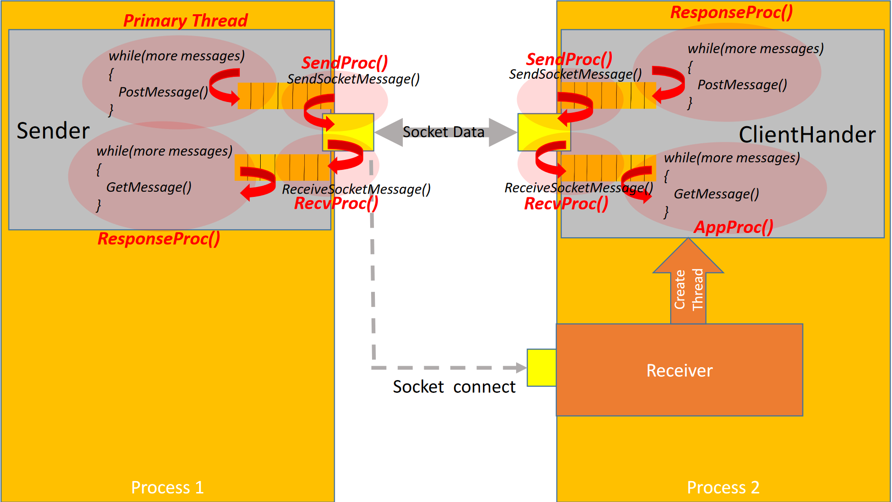

System programs are partitioned into subsystems, organized into packages (sometimes called modules)
and compiled into libraries (components) that are composed of one or more packages. Libraries are an
effective way to partition code into different components (parts) for managing reuse and system maintenance.
Static versus Shared (dynamic) libraries (comparison)
- Static libraries (end with .a in Linux and .lib in Windows)
- Reusable, linked into the application code at compile time: (programs are larger, but faster)
- Changes to the library require all dependent applications to be recomplied (not flexible)
- Project 2 (Messenger.cpp) uses a static library: libmpl.a
- Shared (object) libraries (dynamic link libraries - DLLs in Windows): end in .so in Linux, and .dll in Windows
- reusable, separate from the application code - loaded at runtime (programs are smaller, but slightly slower and more fragile)
- Changes to library to do not require the application to be recompiled, only reloaded (this is great! Very flexible!)
- shared by multiple applications without the need for separate copies, but versioning problems can arise if not careful: "DLL Hell")
- Great for building flexible applications! Necesaary for maintenance and extenstion (consider updates and patches to the OS??)
- Component "plug-in" example: loads a library dynamically and uses an object factory to create an instance of a type defined in the library
- Animal.h - abstract interface for defining different animal types (dog, cat, etc.)
- Dog.cpp - source code for the Dog animal type (compiled to libDog.so)
- Cat.cpp - source code for the Cat animal type (compiled to libCat.so)
- app.cpp - application code (creates instances of animals and interacts
with them through the Animal interface (defined Animal.h).
** Note: the application has no knowledge of the different animal types.
This is the property that makes allows the application code to be a flexible "plug-in"
Note: app.cpp loads the libs using a symbolic (soft) link to manage library versioning
- run - script to compile app.cpp, (Cat.cpp, Dog.cpp into respective libs), and to run the example
- Download - the shared library (plug-in) source code tarball
Resources:
- Difference between Loading and Linking
- Static, Shared Dynamic and Loadable Linux Libraries
- Shared libraries with GCC on Linux
- Static Libraries vs. Dynamic Libraries
- Static vs. Dynamic Loading Comparison
- Dynamic Class Loading for C++ on Linux
- Dynamic loader - "man 3 dlsym"
MPL code for full duplex (bidirectional TCP socket comm )
The class Sender class encapsulates client-side message passing, while the Receiver and ClientHandler class encapsulate
server-side message passing. Full duplex infers a bidirectional communication channel in which both the Sender and (derived)
ClientHandler instances support GetMessage() and PostMessage() operations. The following picture illustrates the concept:

A network (file) copy program using the Full duplex MPL is available below:
( i.e. another version a file transfer service and a client have been developed as an example)
atop the full duplex version of the MPL. The network file copy service is
similar in concept to HW#8 (copyfileBlock), except it sends/receives files across the network one block at a time (as messages)
- Full Duplex (Synchronous) network file copy server
- network file copy client
Full Duplex Message Passing Library -- (version 2, libmpl.a)
- Sender Package - client-side message passing
- Receiver Package - server-side message passing: listening server and ClientHandler service host
- ClientHandler Package - server-side message passing class for defining custom server processing. Register with
Receiver
Project 2 helpers - Please See Project 2 Statement for instructions:
Project 2 statement
***Note:*** I’ve given lots of help.
All that you need to do to complete Project 2 is to supply remaining
the code required in Messenger.cpp Specifically, you need
complete functions:
MessageHandler::AppProc() and
bool SendMessage(const Message &message, const EndPoint &dstPeerEP)
Download Project 2 helper code here
For insight view the test stubs (bottom) of files: Sender.cpp and
Receiver.cpp to see how you might implement
these functions.
You are not required to use my helper code! You can build all of your own code, but
you do need to meet all of requirements specified in the Project statement (see MPL (Sender/Recveiver/ClientHandler)
code below).
File Server code example based on message passing
Demonstrates to how use message passing to support file transfer:
sender/receive files a block at time (similar in ways to HW#8 - copyfileBlock) -- Half duplex MPL
- cse384_file_server_executive.cpp -- concurrent file server
- cse384_client_executive.cpp -- file server client app
- README.txt -- getting started (compiling and running) file server example
- Download File Server example code here
Message Passing Library (libmpl.a) - Half duplex
- Sender Package - client-side message passing
- Receiver Package - server-side message passing: listening server and ClientHandler service host
- ClientHandler Package - server-side message passing class for defining custom server processing. Register with
Receiver
Sockets notes:
C/C++ examples: System calls, serialization, files and I/O
1. USNA (Systems Programming) lectures
- User/Kernel space, System call Overview
- File I/O: read, write, open system calls
- Process creation and termination: I/O buffering
- Fork, Exec system calls, Process management
- Process Scheduling
2. Previous (Lecture 15) Notes and C/C++ Presentation Materials
- C/C++ Introduction: Mike C. notes
- C++ Survival Guide (basic syntax notes and important concepts): Dr. Fawcett
- C and C++ compilation, memory, and computation models
- Assessment of the C++
- Discussion on the elements that comprise C and C++
- Discussion on Packages and Modularity
- Important linux/system header files
- The structure and data flow in sytems is often documented with standard UML diagramming: You should be aware of it
3. Code Examples from 03/02 and 03/04
- Demo stdout/stderr file streams, write system call
- Demo Pass by value, Pass by reference, basic pointers and memory allocation (new/delete, malloc/free)
- Demo C-style strings
- Demo C++ std::strings
- Demo File I/O in C (fopen/fgetc/fprintf,read lines, memory allocation with malloc etc.) Reading/Writing Text Files: C example
- Demo File I/O in C++ (ifsteam/ofstream streams: Reading/Writing Text Files: C++ example
- Demo structs, serialization, reading/writing binary files: C++ example
- Demo reading/writing binary files in C (glibc: fopen/fread/fwrite/fseek etc) C example
- Demo reading/writing binary files in C++ (fstream library: command line args, ifstream/oftstream etc.) C example
4. Type Serialization/Deserialization example
5. C Package example for HW # 7
6. Example of a real C++ package - supports linux file and directory operations (prior to C++ 17 file system)
7. Lecture 14 Examples: Download
Note: You will need C and C++ compilers
- I will use GNU C/C++ (gcc/g++). The Linux Minit distro comes with gcc installed by default, but not g++
- Install g++ with the following command (Open terminal and type): sudo apt-get install g++
- You can install and use gcc/g++ on your Mac computer. Use this is option if you don't have a Linux distro
Code (C and C++ tutorial) Resources:
- Really Nice C tutorial
- Excellent C Programming Tutorial: Tutorialpoint
- Another Excellent C Programming Tutorial(divided in basic and advanced topics): Learn-C.org
- One of the best C++ tutorials I've seen: cpluspluss.com
- Dr. Fawcett's Page on Getting Started with C++
- A very good C++ tutorial: LearnCpp.com
- Program memory layout
- Pointers Tutorial
- Stat system call
- Stat man page
- Compiling Programs using make (chapter 23): linux command line
- Lectures from a well thought out systems programming course at USNA
- Compilation, Linking and Loading article
- A series of Systems Programming lectures from U.S. Naval Academy (USNA)
Dr. Fawcett's developed resources:
Dr. Fawcett taught graduate software design courses here at Syracuse from 1990 - Spring 2019. Most of my software training
was here at SU in Dr. Fawcett's courses from 2005-2019. In retirement he is continuing to
develop (current) software training materials, most of which is hosted in his new github website available
via the URLs below.
- The C++ story provides detailed coverage of the C++ language: specifically how to utilize
the language and its features effectively. The intent of the story is to meet people on individual level of experience. Beginning
C++ programmers can begin to get handle on using the language, while experienced programmers can get detailed insight
into the more advanced aspects.
View the C++ story here
- A series of the C++ videos corresponding to the C++ story
can be viewed here
- Previously taught (Spring 2019) graduate Object-oriented Design course using C++
{kind=link}